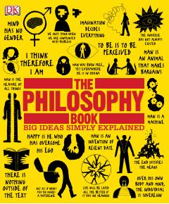

TPFalsafaning asosiy g'oyalari va buyuk mutafakkirlar qarashlari haqida sodda qo'llanma.
Ushbu kitob falsafaning asosiy g'oyalarini sodda va tushunarli tilda, qiziqarli illyustratsiyalar hamda sxemalar yordamida tushuntirib beradi. Unda insoniyat tarixidagi eng buyuk mutafakkirlarning qarashlari va hayotning mazmuni haqidagi savollarga javoblar jamlangan.